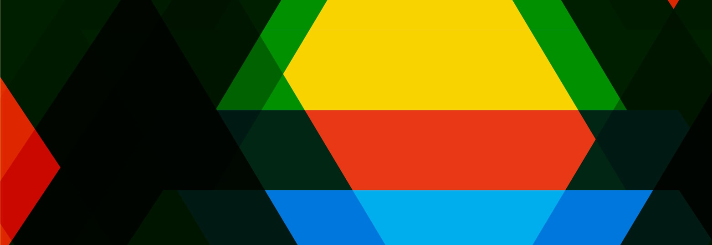

Friday, March 22nd 2019
Daytime Presentations (12-4:30pm):
| 11:30am | Check In |
| 12:00pm | Marc Weidenbaum The Woodshed Is a Black Box |
| 12:35pm | Adam Roberts Exploring the Creative Potential of Deep Learning through the Magenta Project |
| Break |
|
| 1:20pm | Monica Dinculescu Why you should build silly things |
| 1:55pm | Elizabeth Wilson Algorithms, music and machines. |
| Break |
|
| 2:40pm | Yotam Mann & Sarah Rothberg Blobchat, a Typed-Talk |
| 3:15pm | Jon Leidecker United Feedback |
| 3:50pm | Windy Chien Algorithms, Aesthetics, and the Artist’s Hand. |
Evening Music (9pm-1am):
| 8:30pm | Doors Open |
| 9:00pm | Charlie Roberts |
| 9:30pm | Wobbly |
| 10:00pm | Spatial |
| 10:30pm | Digital Selves |
| 11:00pm | Kit Clayton |
| 11:30pm | Algobabez |
| 00:15am | Kindohm |

Saturday, March 23rd 2019
Daytime Presentations (12-4:30pm):
| 11:30am | Check In |
| 12:00pm | Adam Florin The Formalist-Industrial Complex |
| 12:35pm | Jules Litman-Cleper Queering Generativity, Querying Generativity: Generative Algorithms and Postnatural narrativesr |
| Break |
|
| 1:20pm | Chelley Sherman & Christopher Latina Perceptual Geometries |
| 1:55pm | Marque Cornblatt A Future Sports Manifesto |
| Break |
|
| 2:40pm | SPACEFILLER On the Edge of Chaos |
| 3:15pm | Olivia Jack Hydra, Live Coding Visuals in the Browser |
| 3:50pm | Mark Fell Q&A Questions from host Thorsten Sideb0ard. |
Evening Music (9pm-2am):
| 8:30pm | Doors Open |
| 9:00pm | Sebastian Camens |
| 9:30pm | Spednar |
| 10:00pm | William Fields |
| 10:30pm | Shatter Pattern |
| 11:00pm | TVO |
| 11:30pm | Renick Bell |
| 00:10am | W00dy |
| 01:00am | Mark Fell |